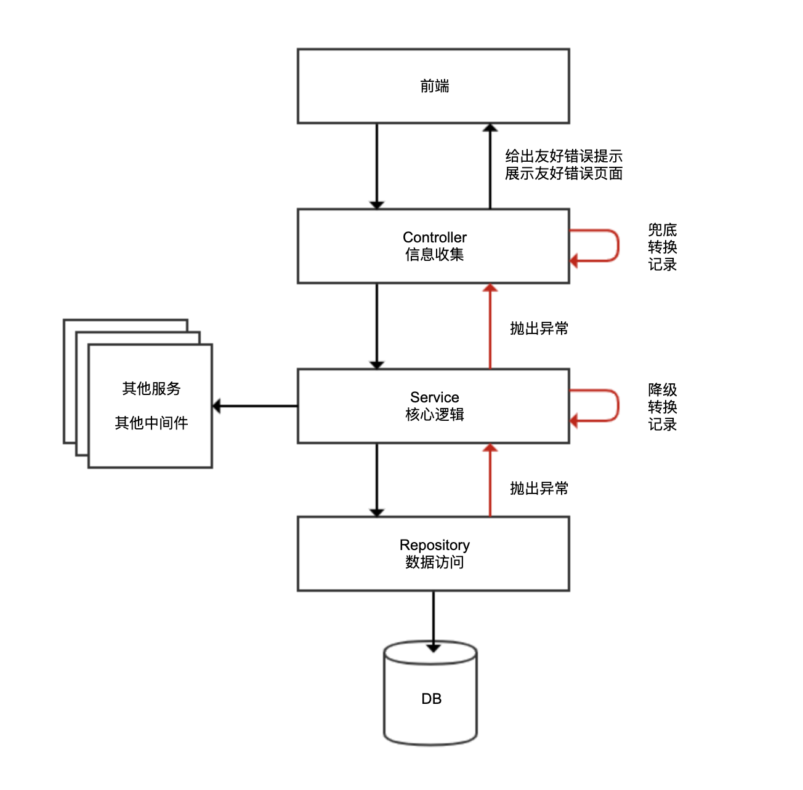
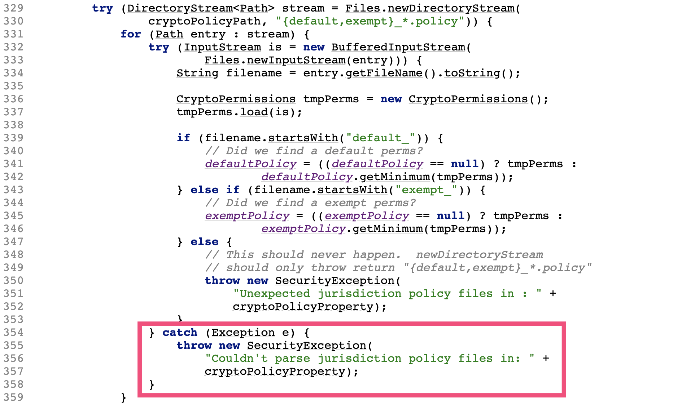

- 00 开篇词 业务代码真的会有这么多坑？.md.html
- 01 使用了并发工具类库，线程安全就高枕无忧了吗？.md.html
- 02 代码加锁：不要让“锁”事成为烦心事.md.html
- 03 线程池：业务代码最常用也最容易犯错的组件.md.html
- 04 连接池：别让连接池帮了倒忙.md.html
- 05 HTTP调用：你考虑到超时、重试、并发了吗？.md.html
- 06 2成的业务代码的Spring声明式事务，可能都没处理正确.md.html
- 07 数据库索引：索引并不是万能药.md.html
- 08 判等问题：程序里如何确定你就是你？.md.html
- 09 数值计算：注意精度、舍入和溢出问题.md.html
- 10 集合类：坑满地的List列表操作.md.html
- 11 空值处理：分不清楚的null和恼人的空指针.md.html
- 12 异常处理：别让自己在出问题的时候变为瞎子.md.html
- 13 日志：日志记录真没你想象的那么简单.md.html
- 14 文件IO：实现高效正确的文件读写并非易事.md.html
- 15 序列化：一来一回你还是原来的你吗？.md.html
- 16 用好Java 8的日期时间类，少踩一些“老三样”的坑.md.html
- 17 别以为“自动挡”就不可能出现OOM.md.html
- 18 当反射、注解和泛型遇到OOP时，会有哪些坑？.md.html
- 19 Spring框架：IoC和AOP是扩展的核心.md.html
- 20 Spring框架：框架帮我们做了很多工作也带来了复杂度.md.html
- 21 代码重复：搞定代码重复的三个绝招.md.html
- 22 接口设计：系统间对话的语言，一定要统一.md.html
- 23 缓存设计：缓存可以锦上添花也可以落井下石.md.html
- 24 业务代码写完，就意味着生产就绪了？.md.html
- 25 异步处理好用，但非常容易用错.md.html
- 26 数据存储：NoSQL与RDBMS如何取长补短、相辅相成？.md.html
- 27 数据源头：任何客户端的东西都不可信任.md.html
- 28 安全兜底：涉及钱时，必须考虑防刷、限量和防重.md.html
- 29 数据和代码：数据就是数据，代码就是代码.md.html
- 30 如何正确保存和传输敏感数据？.md.html
- 31 加餐1：带你吃透课程中Java 8的那些重要知识点（一）.md.html
- 32 加餐2：带你吃透课程中Java 8的那些重要知识点（二）.md.html
- 33 加餐3：定位应用问题，排错套路很重要.md.html
- 34 加餐4：分析定位Java问题，一定要用好这些工具（一）.md.html
- 35 加餐5：分析定位Java问题，一定要用好这些工具（二）.md.html
- 36 加餐6：这15年来，我是如何在工作中学习技术和英语的？.md.html
- 37 加餐7：程序员成长28计.md.html
- 38 加餐8：Java程序从虚拟机迁移到Kubernetes的一些坑.md.html
- 答疑篇：代码篇思考题集锦（一）.md.html
- 答疑篇：代码篇思考题集锦（三）.md.html
- 答疑篇：代码篇思考题集锦（二）.md.html
- 答疑篇：加餐篇思考题答案合集.md.html
- 答疑篇：安全篇思考题答案合集.md.html
- 答疑篇：设计篇思考题答案合集.md.html
- 结束语 写代码时，如何才能尽量避免踩坑？.md.html
- 捐赠
12 异常处理：别让自己在出问题的时候变为瞎子
今天，我来和你聊聊异常处理容易踩的坑。
应用程序避免不了出异常，捕获和处理异常是考验编程功力的一个精细活。一些业务项目中，我曾看到开发同学在开发业务逻辑时不考虑任何异常处理，项目接近完成时再采用“流水线”的方式进行异常处理，也就是统一为所有方法打上 try…catch…捕获所有异常记录日志，有些技巧的同学可能会使用 AOP 来进行类似的“统一异常处理”。
其实，这种处理异常的方式非常不可取。那么今天，我就和你分享下不可取的原因、与异常处理相关的坑和最佳实践。
捕获和处理异常容易犯的错
“统一异常处理”方式正是我要说的第一个错：不在业务代码层面考虑异常处理，仅在框架层面粗犷捕获和处理异常。
为了理解错在何处，我们先来看看大多数业务应用都采用的三层架构：
Controller 层负责信息收集、参数校验、转换服务层处理的数据适配前端，轻业务逻辑；
Service 层负责核心业务逻辑，包括各种外部服务调用、访问数据库、缓存处理、消息处理等；
Repository 层负责数据访问实现，一般没有业务逻辑。

每层架构的工作性质不同，且从业务性质上异常可能分为业务异常和系统异常两大类，这就决定了很难进行统一的异常处理。我们从底向上看一下三层架构：
Repository 层出现异常或许可以忽略，或许可以降级，或许需要转化为一个友好的异常。如果一律捕获异常仅记录日志，很可能业务逻辑已经出错，而用户和程序本身完全感知不到。
Service 层往往涉及数据库事务，出现异常同样不适合捕获，否则事务无法自动回滚。此外 Service 层涉及业务逻辑，有些业务逻辑执行中遇到业务异常，可能需要在异常后转入分支业务流程。如果业务异常都被框架捕获了，业务功能就会不正常。
如果下层异常上升到 Controller 层还是无法处理的话，Controller 层往往会给予用户友好提示，或是根据每一个 API 的异常表返回指定的异常类型，同样无法对所有异常一视同仁。
因此，我不建议在框架层面进行异常的自动、统一处理，尤其不要随意捕获异常。但，框架可以做兜底工作。如果异常上升到最上层逻辑还是无法处理的话，可以以统一的方式进行异常转换，比如通过 @RestControllerAdvice + @ExceptionHandler，来捕获这些“未处理”异常：
对于自定义的业务异常，以 Warn 级别的日志记录异常以及当前 URL、执行方法等信息后，提取异常中的错误码和消息等信息，转换为合适的 API 包装体返回给 API 调用方；
对于无法处理的系统异常，以 Error 级别的日志记录异常和上下文信息（比如 URL、参数、用户 ID）后，转换为普适的“服务器忙，请稍后再试”异常信息，同样以 API 包装体返回给调用方。
比如，下面这段代码的做法：
@RestControllerAdvice
@Slf4j
public class RestControllerExceptionHandler {
private static int GENERIC_SERVER_ERROR_CODE = 2000;
private static String GENERIC_SERVER_ERROR_MESSAGE = "服务器忙，请稍后再试";
@ExceptionHandler
public APIResponse handle(HttpServletRequest req, HandlerMethod method, Exception ex) {
if (ex instanceof BusinessException) {
BusinessException exception = (BusinessException) ex;
log.warn(String.format("访问 %s -> %s 出现业务异常！", req.getRequestURI(), method.toString()), ex);
return new APIResponse(false, null, exception.getCode(), exception.getMessage());
} else {
log.error(String.format("访问 %s -> %s 出现系统异常！", req.getRequestURI(), method.toString()), ex);
return new APIResponse(false, null, GENERIC_SERVER_ERROR_CODE, GENERIC_SERVER_ERROR_MESSAGE);
}
}
}
出现运行时系统异常后，异常处理程序会直接把异常转换为 JSON 返回给调用方：

要做得更好，你可以把相关出入参、用户信息在脱敏后记录到日志中，方便出现问题时根据上下文进一步排查。
第二个错，捕获了异常后直接生吞。在任何时候，我们捕获了异常都不应该生吞，也就是直接丢弃异常不记录、不抛出。这样的处理方式还不如不捕获异常，因为被生吞掉的异常一旦导致 Bug，就很难在程序中找到蛛丝马迹，使得 Bug 排查工作难上加难。
通常情况下，生吞异常的原因，可能是不希望自己的方法抛出受检异常，只是为了把异常“处理掉”而捕获并生吞异常，也可能是想当然地认为异常并不重要或不可能产生。但不管是什么原因，不管是你认为多么不重要的异常，都不应该生吞，哪怕是一个日志也好。
第三个错，丢弃异常的原始信息。我们来看两个不太合适的异常处理方式，虽然没有完全生吞异常，但也丢失了宝贵的异常信息。
比如有这么一个会抛出受检异常的方法 readFile：
private void readFile() throws IOException {
Files.readAllLines(Paths.get("a_file"));
}
像这样调用 readFile 方法，捕获异常后，完全不记录原始异常，直接抛出一个转换后异常，导致出了问题不知道 IOException 具体是哪里引起的：
@GetMapping("wrong1")
public void wrong1(){
try {
readFile();
} catch (IOException e) {
//原始异常信息丢失
throw new RuntimeException("系统忙请稍后再试");
}
}
或者是这样，只记录了异常消息，却丢失了异常的类型、栈等重要信息：
catch (IOException e) {
//只保留了异常消息，栈没有记录
log.error("文件读取错误, {}", e.getMessage());
throw new RuntimeException("系统忙请稍后再试");
}
留下的日志是这样的，看完一脸茫然，只知道文件读取错误的文件名，至于为什么读取错误、是不存在还是没权限，完全不知道。
[12:57:19.746] [http-nio-45678-exec-1] [ERROR] [.g.t.c.e.d.HandleExceptionController:35 ] - 文件读取错误, a_file
这两种处理方式都不太合理，可以改为如下方式：
catch (IOException e) {
log.error("文件读取错误", e);
throw new RuntimeException("系统忙请稍后再试");
}
或者，把原始异常作为转换后新异常的 cause，原始异常信息同样不会丢：
catch (IOException e) {
throw new RuntimeException("系统忙请稍后再试", e);
}
其实，JDK 内部也会犯类似的错。之前我遇到一个使用 JDK10 的应用偶发启动失败的案例，日志中可以看到出现类似的错误信息：
Caused by: java.lang.SecurityException: Couldn't parse jurisdiction policy files in: unlimited
at java.base/javax.crypto.JceSecurity.setupJurisdictionPolicies(JceSecurity.java:355)
at java.base/javax.crypto.JceSecurity.access$000(JceSecurity.java:73)
at java.base/javax.crypto.JceSecurity$1.run(JceSecurity.java:109)
at java.base/javax.crypto.JceSecurity$1.run(JceSecurity.java:106)
at java.base/java.security.AccessController.doPrivileged(Native Method)
at java.base/javax.crypto.JceSecurity.<clinit>(JceSecurity.java:105)
... 20 more
查看 JDK JceSecurity 类 setupJurisdictionPolicies 方法源码，发现异常 e 没有记录，也没有作为新抛出异常的 cause，当时读取文件具体出现什么异常（权限问题又或是 IO 问题）可能永远都无法知道了，对问题定位造成了很大困扰：

第四个错，抛出异常时不指定任何消息。我见过一些代码中的偷懒做法，直接抛出没有 message 的异常：
throw new RuntimeException();
这么写的同学可能觉得永远不会走到这个逻辑，永远不会出现这样的异常。但，这样的异常却出现了，被 ExceptionHandler 拦截到后输出了下面的日志信息：
[13:25:18.031] [http-nio-45678-exec-3] [ERROR] [c.e.d.RestControllerExceptionHandler:24 ] - 访问 /handleexception/wrong3 -> org.geekbang.time.commonmistakes.exception.demo1.HandleExceptionController#wrong3(String) 出现系统异常！
java.lang.RuntimeException: null
...
这里的 null 非常容易引起误解。按照空指针问题排查半天才发现，其实是异常的 message 为空。
总之，如果你捕获了异常打算处理的话，除了通过日志正确记录异常原始信息外，通常还有三种处理模式：
转换，即转换新的异常抛出。对于新抛出的异常，最好具有特定的分类和明确的异常消息，而不是随便抛一个无关或没有任何信息的异常，并最好通过 cause 关联老异常。
重试，即重试之前的操作。比如远程调用服务端过载超时的情况，盲目重试会让问题更严重，需要考虑当前情况是否适合重试。
恢复，即尝试进行降级处理，或使用默认值来替代原始数据。
以上，就是通过 catch 捕获处理异常的一些最佳实践。
小心 finally 中的异常
有些时候，我们希望不管是否遇到异常，逻辑完成后都要释放资源，这时可以使用 finally 代码块而跳过使用 catch 代码块。
但要千万小心 finally 代码块中的异常，因为资源释放处理等收尾操作同样也可能出现异常。比如下面这段代码，我们在 finally 中抛出一个异常：
@GetMapping("wrong")
public void wrong() {
try {
log.info("try");
//异常丢失
throw new RuntimeException("try");
} finally {
log.info("finally");
throw new RuntimeException("finally");
}
}
最后在日志中只能看到 finally 中的异常，虽然 try 中的逻辑出现了异常，但却被 finally 中的异常覆盖了。这是非常危险的，特别是 finally 中出现的异常是偶发的，就会在部分时候覆盖 try 中的异常，让问题更不明显：
[13:34:42.247] [http-nio-45678-exec-1] [ERROR] [.a.c.c.C.[.[.[/].[dispatcherServlet]:175 ] - Servlet.service() for servlet [dispatcherServlet] in context with path [] threw exception [Request processing failed; nested exception is java.lang.RuntimeException: finally] with root cause
java.lang.RuntimeException: finally
至于异常为什么被覆盖，原因也很简单，因为一个方法无法出现两个异常。修复方式是，finally 代码块自己负责异常捕获和处理：
@GetMapping("right")
public void right() {
try {
log.info("try");
throw new RuntimeException("try");
} finally {
log.info("finally");
try {
throw new RuntimeException("finally");
} catch (Exception ex) {
log.error("finally", ex);
}
}
}
或者可以把 try 中的异常作为主异常抛出，使用 addSuppressed 方法把 finally 中的异常附加到主异常上：
@GetMapping("right2")
public void right2() throws Exception {
Exception e = null;
try {
log.info("try");
throw new RuntimeException("try");
} catch (Exception ex) {
e = ex;
} finally {
log.info("finally");
try {
throw new RuntimeException("finally");
} catch (Exception ex) {
if (e!= null) {
e.addSuppressed(ex);
} else {
e = ex;
}
}
}
throw e;
}
运行方法可以得到如下异常信息，其中同时包含了主异常和被屏蔽的异常：
java.lang.RuntimeException: try
at org.geekbang.time.commonmistakes.exception.finallyissue.FinallyIssueController.right2(FinallyIssueController.java:69)
at sun.reflect.NativeMethodAccessorImpl.invoke0(Native Method)
...
Suppressed: java.lang.RuntimeException: finally
at org.geekbang.time.commonmistakes.exception.finallyissue.FinallyIssueController.right2(FinallyIssueController.java:75)
... 54 common frames omitted
其实这正是 try-with-resources 语句的做法，对于实现了 AutoCloseable 接口的资源，建议使用 try-with-resources 来释放资源，否则也可能会产生刚才提到的，释放资源时出现的异常覆盖主异常的问题。比如如下我们定义一个测试资源，其 read 和 close 方法都会抛出异常：
public class TestResource implements AutoCloseable {
public void read() throws Exception{
throw new Exception("read error");
}
@Override
public void close() throws Exception {
throw new Exception("close error");
}
}
使用传统的 try-finally 语句，在 try 中调用 read 方法，在 finally 中调用 close 方法：
@GetMapping("useresourcewrong")
public void useresourcewrong() throws Exception {
TestResource testResource = new TestResource();
try {
testResource.read();
} finally {
testResource.close();
}
}
可以看到，同样出现了 finally 中的异常覆盖了 try 中异常的问题：
java.lang.Exception: close error
at org.geekbang.time.commonmistakes.exception.finallyissue.TestResource.close(TestResource.java:10)
at org.geekbang.time.commonmistakes.exception.finallyissue.FinallyIssueController.useresourcewrong(FinallyIssueController.java:27)
而改为 try-with-resources 模式之后：
@GetMapping("useresourceright")
public void useresourceright() throws Exception {
try (TestResource testResource = new TestResource()){
testResource.read();
}
}
try 和 finally 中的异常信息都可以得到保留：
java.lang.Exception: read error
at org.geekbang.time.commonmistakes.exception.finallyissue.TestResource.read(TestResource.java:6)
...
Suppressed: java.lang.Exception: close error
at org.geekbang.time.commonmistakes.exception.finallyissue.TestResource.close(TestResource.java:10)
at org.geekbang.time.commonmistakes.exception.finallyissue.FinallyIssueController.useresourceright(FinallyIssueController.java:35)
... 54 common frames omitted
千万别把异常定义为静态变量
既然我们通常会自定义一个业务异常类型，来包含更多的异常信息，比如异常错误码、友好的错误提示等，那就需要在业务逻辑各处，手动抛出各种业务异常来返回指定的错误码描述（比如对于下单操作，用户不存在返回 2001，商品缺货返回 2002 等）。
对于这些异常的错误代码和消息，我们期望能够统一管理，而不是散落在程序各处定义。这个想法很好，但稍有不慎就可能会出现把异常定义为静态变量的坑。
我在救火排查某项目生产问题时，遇到了一件非常诡异的事情：我发现异常堆信息显示的方法调用路径，在当前入参的情况下根本不可能产生，项目的业务逻辑又很复杂，就始终没往异常信息是错的这方面想，总觉得是因为某个分支流程导致业务没有按照期望的流程进行。
经过艰难的排查，最终定位到原因是把异常定义为了静态变量，导致异常栈信息错乱，类似于定义一个 Exceptions 类来汇总所有的异常，把异常存放在静态字段中：
public class Exceptions {
public static BusinessException ORDEREXISTS = new BusinessException("订单已经存在", 3001);
...
}
把异常定义为静态变量会导致异常信息固化，这就和异常的栈一定是需要根据当前调用来动态获取相矛盾。
我们写段代码来模拟下这个问题：定义两个方法 createOrderWrong 和 cancelOrderWrong 方法，它们内部都会通过 Exceptions 类来获得一个订单不存在的异常；先后调用两个方法，然后抛出。
@GetMapping("wrong")
public void wrong() {
try {
createOrderWrong();
} catch (Exception ex) {
log.error("createOrder got error", ex);
}
try {
cancelOrderWrong();
} catch (Exception ex) {
log.error("cancelOrder got error", ex);
}
}
private void createOrderWrong() {
//这里有问题
throw Exceptions.ORDEREXISTS;
}
private void cancelOrderWrong() {
//这里有问题
throw Exceptions.ORDEREXISTS;
}
运行程序后看到如下日志，cancelOrder got error 的提示对应了 createOrderWrong 方法。显然，cancelOrderWrong 方法在出错后抛出的异常，其实是 createOrderWrong 方法出错的异常：
[14:05:25.782] [http-nio-45678-exec-1] [ERROR] [.c.e.d.PredefinedExceptionController:25 ] - cancelOrder got error
org.geekbang.time.commonmistakes.exception.demo2.BusinessException: 订单已经存在
at org.geekbang.time.commonmistakes.exception.demo2.Exceptions.<clinit>(Exceptions.java:5)
at org.geekbang.time.commonmistakes.exception.demo2.PredefinedExceptionController.createOrderWrong(PredefinedExceptionController.java:50)
at org.geekbang.time.commonmistakes.exception.demo2.PredefinedExceptionController.wrong(PredefinedExceptionController.java:18)
修复方式很简单，改一下 Exceptions 类的实现，通过不同的方法把每一种异常都 new 出来抛出即可：
public class Exceptions {
public static BusinessException orderExists(){
return new BusinessException("订单已经存在", 3001);
}
}
提交线程池的任务出了异常会怎么样？
在第 3 讲介绍线程池时我提到，线程池常用作异步处理或并行处理。那么，把任务提交到线程池处理，任务本身出现异常时会怎样呢？
我们来看一个例子：提交 10 个任务到线程池异步处理，第 5 个任务抛出一个 RuntimeException，每个任务完成后都会输出一行日志：
@GetMapping("execute")
public void execute() throws InterruptedException {
String prefix = "test";
ExecutorService threadPool = Executors.newFixedThreadPool(1, new ThreadFactoryBuilder().setNameFormat(prefix+"%d").get());
//提交10个任务到线程池处理，第5个任务会抛出运行时异常
IntStream.rangeClosed(1, 10).forEach(i -> threadPool.execute(() -> {
if (i == 5) throw new RuntimeException("error");
log.info("I'm done : {}", i);
}));
threadPool.shutdown();
threadPool.awaitTermination(1, TimeUnit.HOURS);
}
观察日志可以发现两点：
...
[14:33:55.990] [test0] [INFO ] [e.d.ThreadPoolAndExceptionController:26 ] - I'm done : 4
Exception in thread "test0" java.lang.RuntimeException: error
at org.geekbang.time.commonmistakes.exception.demo3.ThreadPoolAndExceptionController.lambda$null$0(ThreadPoolAndExceptionController.java:25)
at java.util.concurrent.ThreadPoolExecutor.runWorker(ThreadPoolExecutor.java:1149)
at java.util.concurrent.ThreadPoolExecutor$Worker.run(ThreadPoolExecutor.java:624)
at java.lang.Thread.run(Thread.java:748)
[14:33:55.990] [test1] [INFO ] [e.d.ThreadPoolAndExceptionController:26 ] - I'm done : 6
...
任务 1 到 4 所在的线程是 test0，任务 6 开始运行在线程 test1。由于我的线程池通过线程工厂为线程使用统一的前缀 test 加上计数器进行命名，因此从线程名的改变可以知道因为异常的抛出老线程退出了，线程池只能重新创建一个线程。如果每个异步任务都以异常结束，那么线程池可能完全起不到线程重用的作用。
因为没有手动捕获异常进行处理，ThreadGroup 帮我们进行了未捕获异常的默认处理，向标准错误输出打印了出现异常的线程名称和异常信息。显然，这种没有以统一的错误日志格式记录错误信息打印出来的形式，对生产级代码是不合适的，ThreadGroup 的相关源码如下所示：
public void uncaughtException(Thread t, Throwable e) {
if (parent != null) {
parent.uncaughtException(t, e);
} else {
Thread.UncaughtExceptionHandler ueh =
Thread.getDefaultUncaughtExceptionHandler();
if (ueh != null) {
ueh.uncaughtException(t, e);
} else if (!(e instanceof ThreadDeath)) {
System.err.print("Exception in thread \""
\+ t.getName() + "\" ");
e.printStackTrace(System.err);
}
}
}
修复方式有 2 步：
以 execute 方法提交到线程池的异步任务，最好在任务内部做好异常处理；
设置自定义的异常处理程序作为保底，比如在声明线程池时自定义线程池的未捕获异常处理程序：
new ThreadFactoryBuilder()
.setNameFormat(prefix+"%d")
.setUncaughtExceptionHandler((thread, throwable)-> log.error("ThreadPool {} got exception", thread, throwable))
.get()
或者设置全局的默认未捕获异常处理程序：
static {
Thread.setDefaultUncaughtExceptionHandler((thread, throwable)-> log.error("Thread {} got exception", thread, throwable));
}
通过线程池 ExecutorService 的 execute 方法提交任务到线程池处理，如果出现异常会导致线程退出，控制台输出中可以看到异常信息。那么，把 execute 方法改为 submit，线程还会退出吗，异常还能被处理程序捕获到吗？
修改代码后重新执行程序可以看到如下日志，说明线程没退出，异常也没记录被生吞了：
[15:44:33.769] [test0] [INFO ] [e.d.ThreadPoolAndExceptionController:47 ] - I'm done : 1
[15:44:33.770] [test0] [INFO ] [e.d.ThreadPoolAndExceptionController:47 ] - I'm done : 2
[15:44:33.770] [test0] [INFO ] [e.d.ThreadPoolAndExceptionController:47 ] - I'm done : 3
[15:44:33.770] [test0] [INFO ] [e.d.ThreadPoolAndExceptionController:47 ] - I'm done : 4
[15:44:33.770] [test0] [INFO ] [e.d.ThreadPoolAndExceptionController:47 ] - I'm done : 6
[15:44:33.770] [test0] [INFO ] [e.d.ThreadPoolAndExceptionController:47 ] - I'm done : 7
[15:44:33.770] [test0] [INFO ] [e.d.ThreadPoolAndExceptionController:47 ] - I'm done : 8
[15:44:33.771] [test0] [INFO ] [e.d.ThreadPoolAndExceptionController:47 ] - I'm done : 9
[15:44:33.771] [test0] [INFO ] [e.d.ThreadPoolAndExceptionController:47 ] - I'm done : 10
为什么会这样呢？
查看 FutureTask 源码可以发现，在执行任务出现异常之后，异常存到了一个 outcome 字段中，只有在调用 get 方法获取 FutureTask 结果的时候，才会以 ExecutionException 的形式重新抛出异常：
public void run() {
...
try {
Callable<V> c = callable;
if (c != null && state == NEW) {
V result;
boolean ran;
try {
result = c.call();
ran = true;
} catch (Throwable ex) {
result = null;
ran = false;
setException(ex);
}
...
}
protected void setException(Throwable t) {
if (UNSAFE.compareAndSwapInt(this, stateOffset, NEW, COMPLETING)) {
outcome = t;
UNSAFE.putOrderedInt(this, stateOffset, EXCEPTIONAL); // final state
finishCompletion();
}
}
public V get() throws InterruptedException, ExecutionException {
int s = state;
if (s <= COMPLETING)
s = awaitDone(false, 0L);
return report(s);
}
private V report(int s) throws ExecutionException {
Object x = outcome;
if (s == NORMAL)
return (V)x;
if (s >= CANCELLED)
throw new CancellationException();
throw new ExecutionException((Throwable)x);
}
修改后的代码如下所示，我们把 submit 返回的 Future 放到了 List 中，随后遍历 List 来捕获所有任务的异常。这么做确实合乎情理。既然是以 submit 方式来提交任务，那么我们应该关心任务的执行结果，否则应该以 execute 来提交任务：
List<Future> tasks = IntStream.rangeClosed(1, 10).mapToObj(i -> threadPool.submit(() -> {
if (i == 5) throw new RuntimeException("error");
log.info("I'm done : {}", i);
})).collect(Collectors.toList());
tasks.forEach(task-> {
try {
task.get();
} catch (Exception e) {
log.error("Got exception", e);
}
});
执行这段程序可以看到如下的日志输出：
[15:44:13.543] [http-nio-45678-exec-1] [ERROR] [e.d.ThreadPoolAndExceptionController:69 ] - Got exception
java.util.concurrent.ExecutionException: java.lang.RuntimeException: error
重点回顾
在今天的文章中，我介绍了处理异常容易犯的几个错和最佳实践。
第一，注意捕获和处理异常的最佳实践。首先，不应该用 AOP 对所有方法进行统一异常处理，异常要么不捕获不处理，要么根据不同的业务逻辑、不同的异常类型进行精细化、针对性处理；其次，处理异常应该杜绝生吞，并确保异常栈信息得到保留；最后，如果需要重新抛出异常的话，请使用具有意义的异常类型和异常消息。
第二，务必小心 finally 代码块中资源回收逻辑，确保 finally 代码块不出现异常，内部把异常处理完毕，避免 finally 中的异常覆盖 try 中的异常；或者考虑使用 addSuppressed 方法把 finally 中的异常附加到 try 中的异常上，确保主异常信息不丢失。此外，使用实现了 AutoCloseable 接口的资源，务必使用 try-with-resources 模式来使用资源，确保资源可以正确释放，也同时确保异常可以正确处理。
第三，虽然在统一的地方定义收口所有的业务异常是一个不错的实践，但务必确保异常是每次 new 出来的，而不能使用一个预先定义的 static 字段存放异常，否则可能会引起栈信息的错乱。
第四，确保正确处理了线程池中任务的异常，如果任务通过 execute 提交，那么出现异常会导致线程退出，大量的异常会导致线程重复创建引起性能问题，我们应该尽可能确保任务不出异常，同时设置默认的未捕获异常处理程序来兜底；如果任务通过 submit 提交意味着我们关心任务的执行结果，应该通过拿到的 Future 调用其 get 方法来获得任务运行结果和可能出现的异常，否则异常可能就被生吞了。
今天用到的代码，我都放在了 GitHub 上，你可以点击这个链接查看。
思考与讨论
关于在 finally 代码块中抛出异常的坑，如果在 finally 代码块中返回值，你觉得程序会以 try 或 catch 中返回值为准，还是以 finally 中的返回值为准呢？
对于手动抛出的异常，不建议直接使用 Exception 或 RuntimeException，通常建议复用 JDK 中的一些标准异常，比如IllegalArgumentException、IllegalStateException、UnsupportedOperationException，你能说说它们的适用场景，并列出更多常用异常吗？
不知道针对异常处理，你还遇到过什么坑，还有什么最佳实践的心得吗？我是朱晔，欢迎在评论区与我留言分享，也欢迎你把这篇文章分享给你的朋友或同事，一起交流。
© 2019 - 2023 Liangliang Lee. Powered by gin and hexo-theme-book.